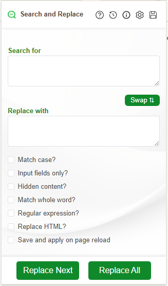

Replace Next vs. Replace All
To replace the first occurrence of the search term, press Replace Next. You can
continue to
press
the button until there are no more occurrences.
To replace all occurrences of the search term, press Replace All.
There is currently no undo function. If you make a mistake, you can reload the page to restore the original text. However, you will lose any unsaved changes in text editors and in text input fields.
Replacing text in editors and text fields
To replace text in text editors or input boxes you should check the Input
fields
only?
check box. Otherwise, the search text will be replaced throughout the entire HTML, possibly breaking
the
page. To avoid changing hidden input fields, you should also check the Visible elements
only?
check box.
Setup

Replacing text anywhere on the page
To replace text that is not contained within a text editor and not contained within a
text field, leave the Input Fields only? and Only change visible content?
boxes unchecked.

Matching the case of text
If you need to replace THIS but not This then you should use the
match
case option.
The following setup will match Condo but not condo. It will replace
Condo with apartment in text fields that are visible on the page.

Matching whole words
If you need to replace the word partial but not partially then you should
use
the Match whole word? option.

Wild Cards and Regular Expressions
If you need to match a partial search term then you should check the Regular Expressions check box and specify a wild card. You will need to have a very basic knowledge of regular expressions to use this feature. I recommend regexpal for testing
Before

Setup

After

Replacing text in WordPress
WordPress is currently on version 6.6, as of March 2023. The post editor has changed significantly since this extension was created and a new setup is required to replace text in WordPress.
Setup for WordPress 6+

Setup for WordPress 5 and below
Reporting Issues
Only change visible content?
before performing a search and replace.
If you find a bug, please provide a detailed report on the Chrome Extension Store or on GitHub.